01
Aménagement paysager
Conception et réalisation complète : nivellement, plantation, gazon, végétaux et mise en valeur de ton terrain.
Sur soumissionAménagement & entretien · Région de Québec
Aménagement paysager, pose de pavé, plate-bandes, terrasses, structures et entretien de terrain — résidentiel comme commercial. Une équipe qui travaille proprement, dans les délais, et qui te livre un résultat final dont t'es fier. On s'occupe de tout, du terrassement à la dernière plante.
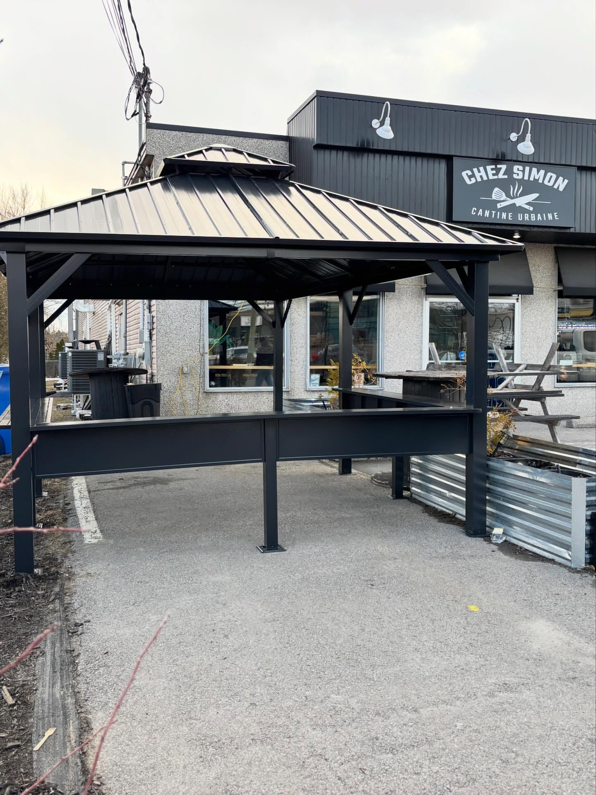
Aménagement extérieur · QuébecL'équipe
Entretien Prestige, c'est une équipe de Québec qui prend l'aménagement et l'entretien extérieur au sérieux. Chaque projet est traité comme un chantier complet — du nivellement du terrain à la pose du pavé, en passant par les plate-bandes, les structures et la finition.
Cour résidentielle, terrasse, terrain de commerce ou projet clé en main pour un restaurant : l'approche reste la même. Travail propre, matériaux durables, échéanciers respectés. Ce printemps, on a d'ailleurs monté la terrasse extérieure de Chez Simon, la cantine urbaine de Melissa et Martin — gazebo, aménagement et « résultat final » livré à temps pour la belle saison.
Services
De la conception d'aménagement à l'entretien saisonnier, on couvre l'ensemble des travaux extérieurs. Chaque projet démarre par une soumission gratuite, adaptée à ton terrain et à ce que tu veux accomplir.
Conception et réalisation complète : nivellement, plantation, gazon, végétaux et mise en valeur de ton terrain.
Sur soumissionAllées, patios et bordures en pavé uni, avec fondation compactée. Paillis et pierre décorative pour un fini soigné.
Sur soumissionCréation et rénovation de plate-bandes : terre, toile, bordures, plantation et finition au paillis ou à la pierre.
Sur soumissionTaille droite et propre de tes haies de cèdres et arbustes, avec ramassage complet des rognures.
Sur soumissionTonte régulière ou ponctuelle, contours au coupe-bordure, gazon soufflé. Contrats saisonniers disponibles.
Sur soumissionOuverture et fermeture de terrain et de piscine : nettoyage printanier, ménage des feuilles, préparation à l'hiver.
Sur soumissionConstruction de terrasses, gazebos, pergolas et petites structures. Menuiserie extérieure sur mesure.
Sur soumissionRéfection de terrasse, remplacement de planches, escaliers, treillis et remise à neuf de tes installations.
Sur soumissionContrats d'entretien saisonnier pour maisons, commerces et immeubles. Terrain toujours impeccable, sans y penser.
Sur soumissionUn seul interlocuteur du début à la fin. On coordonne l'ensemble des travaux et on te livre le « résultat final ».
Sur soumissionChaque projet est unique : on se déplace pour évaluer ton terrain et te remettre une soumission gratuite, sans engagement. Écris-nous en message privé pour lancer le tout.
Demande de soumission
Trois étapes simples pour lancer ton projet. Pas de formulaire interminable — juste ce qu'il faut pour qu'on comprenne ton besoin et qu'on te revienne rapidement.
Aménagement, pavé, plate-bandes, terrasse, entretien ? Envoie-nous quelques photos de ton terrain en message privé Instagram.
On regarde ton terrain, on discute de ce que tu veux accomplir et on te remet une soumission claire, sans surprise.
Une fois la soumission acceptée, on planifie le chantier et on te livre le « résultat final » dans les délais convenus.
Le plus simple : un DM sur Instagram @entretien__prestige avec quelques photos. On te répond rapidement.
Avant / Après
Glisse la poignée pour voir la transformation d'un projet de terrasse — de la démolition de l'ancienne structure jusqu'à la terrasse neuve avec éclairage.
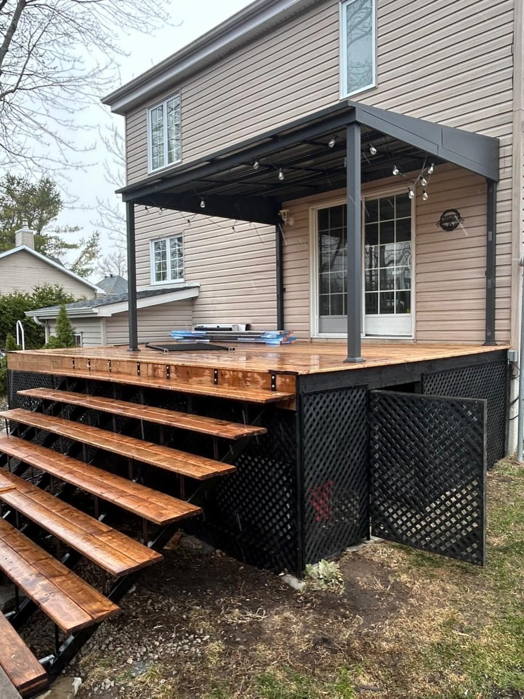
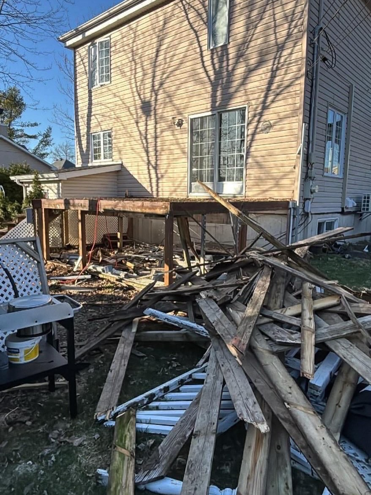
Réalisations
Quelques chantiers récents dans la région de Québec — terrasses, gazebos, structures et aménagements. Photos issues de notre page Instagram @entretien__prestige.
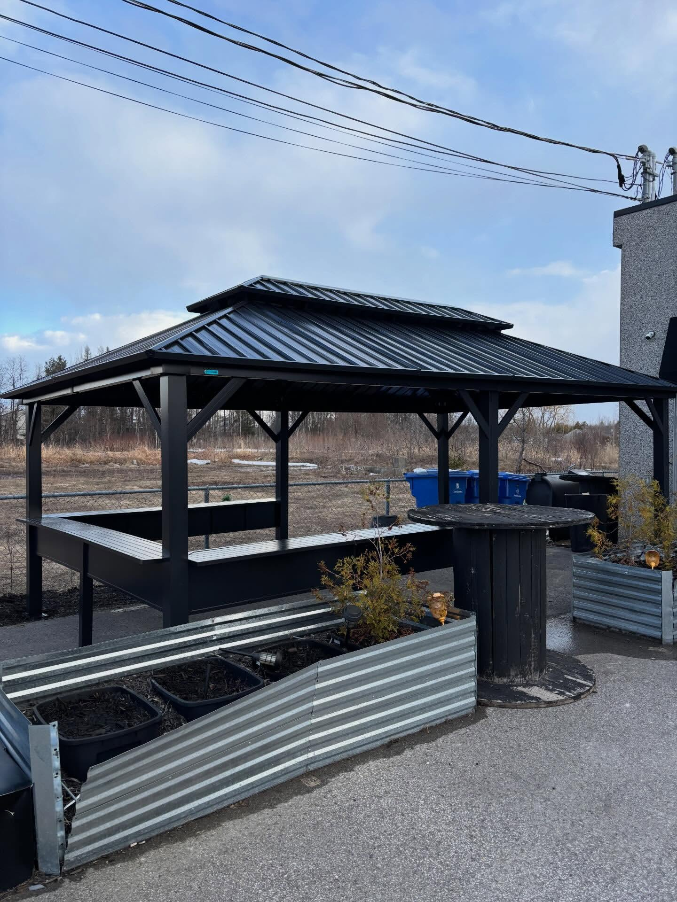
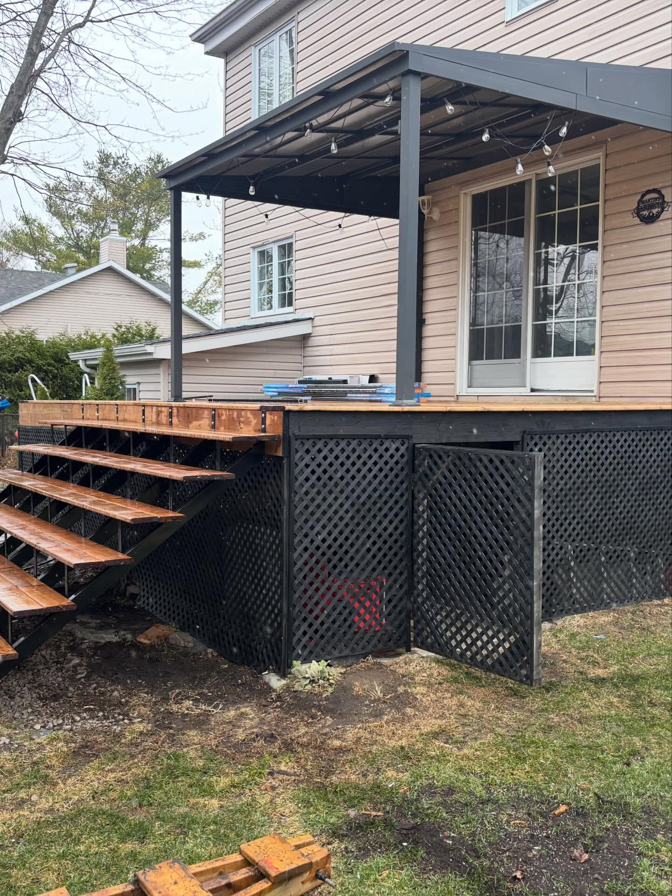
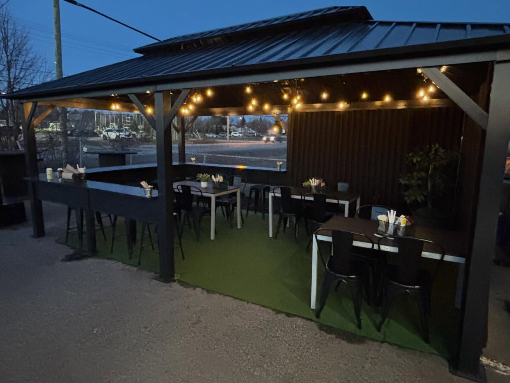
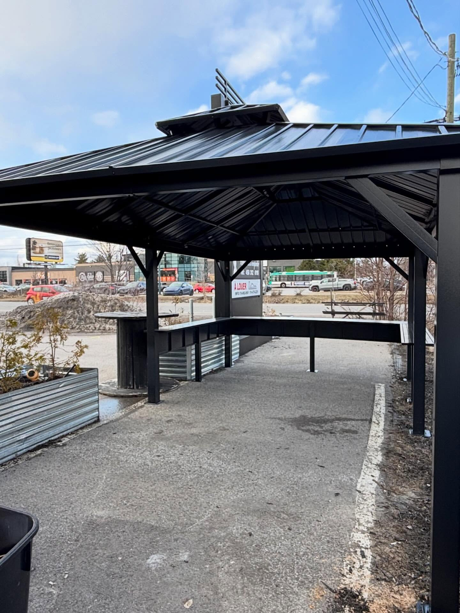
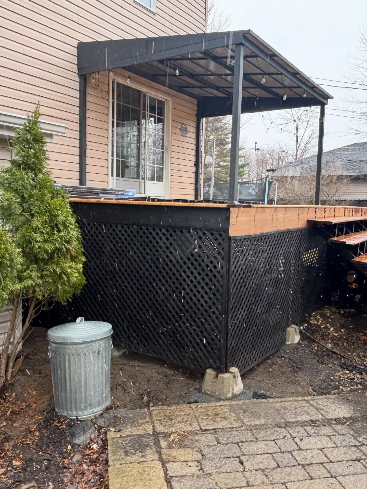
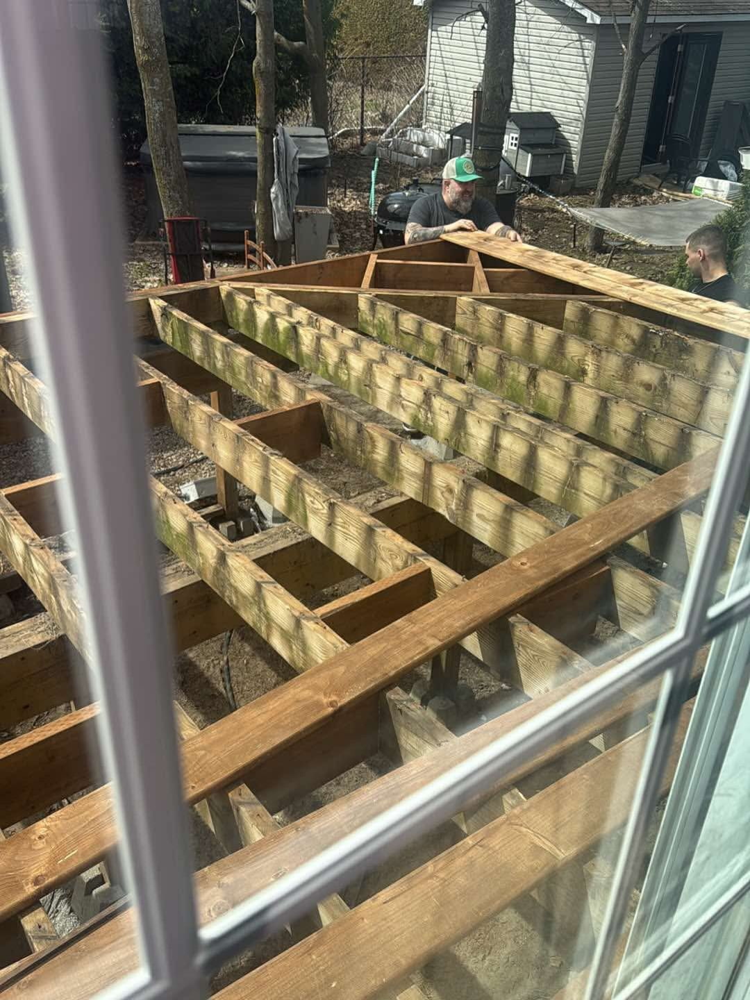
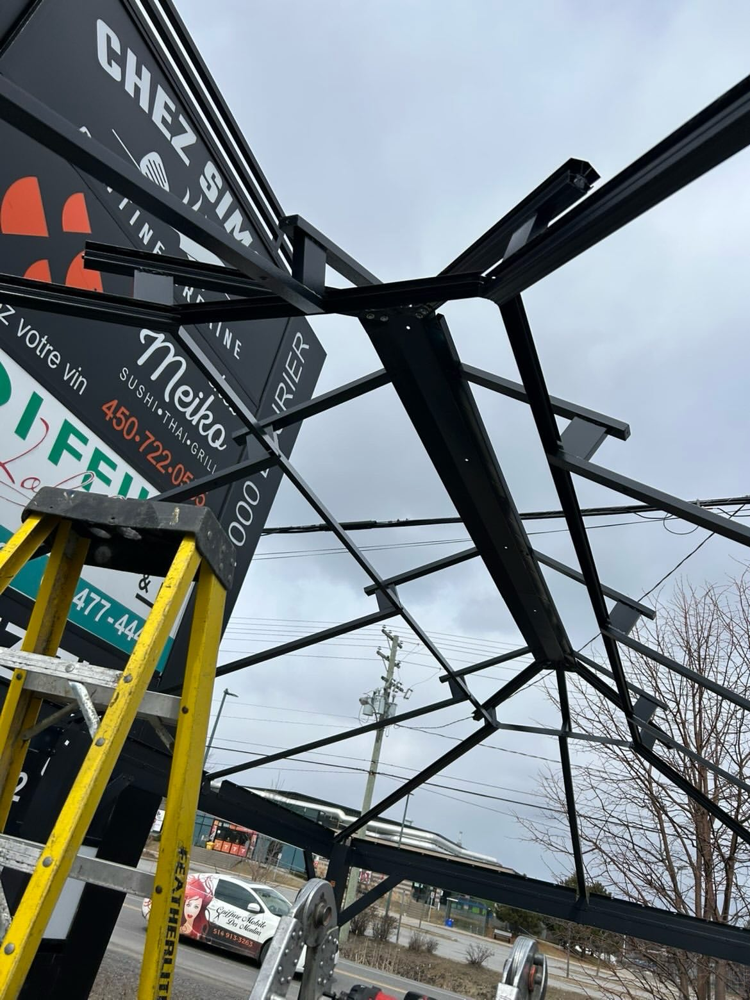
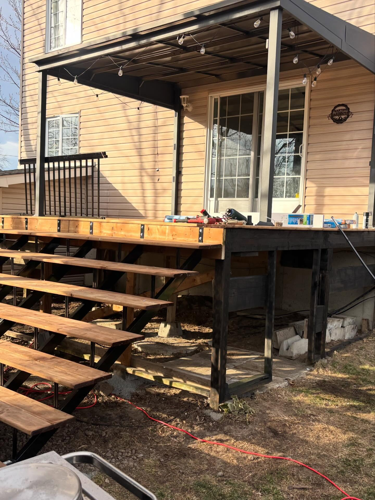
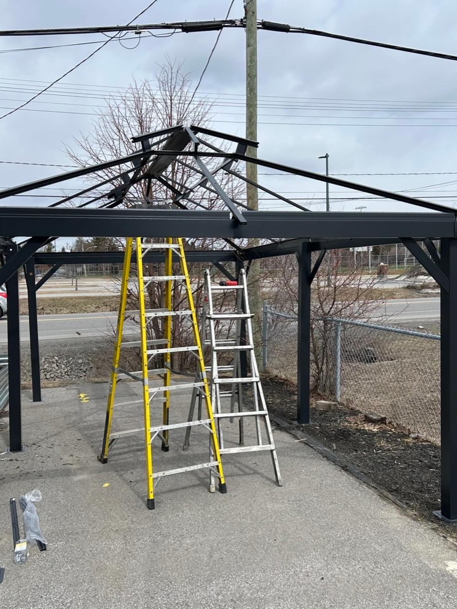
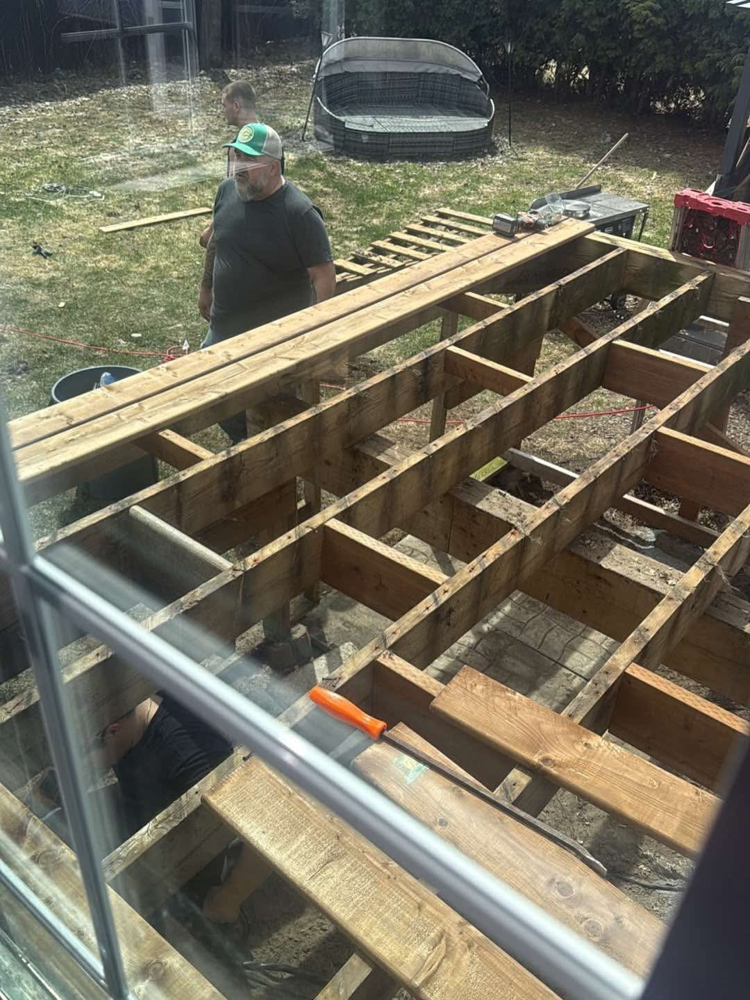
Témoignages
Quelques mots reçus de propriétaires et de commerçants qui nous ont confié leur terrain.
« Équipe professionnelle et ponctuelle. Notre cour arrière est méconnaissable — pavé, plate-bandes, tout est impeccable. On recommande sans hésiter. »
« Ils ont monté notre terrasse extérieure pour la belle saison. Travail propre, échéancier respecté, et le résultat final est superbe. Merci ! »
« Du début à la fin, un seul interlocuteur qui s'occupe de tout. Souci du détail, bons conseils, et un terrain qu'on est fiers de montrer. »
Questions fréquentes
Les questions qu'on reçoit le plus souvent — réponses claires, sans détour.
Oui, toujours. On se déplace pour évaluer ton terrain et on te remet une soumission claire, sans engagement de ta part.
Les deux. Cour de maison, terrain de commerce, immeuble ou projet clé en main pour un restaurant — on s'adapte à l'ampleur du chantier.
La région de Québec et ses environs. Écris-nous en message avec ton adresse et on te confirme si on couvre ton secteur.
Oui. Coupe de gazon, taille de haie, ouverture et fermeture de terrain — on peut mettre en place un contrat saisonnier pour que ton terrain reste impeccable sans que t'aies à y penser.
Absolument. Terrasses, gazebos, pergolas, escaliers, treillis et menuiserie extérieure — on gère la construction comme la rénovation de tes installations.
Le plus simple est un message privé sur Instagram @entretien__prestige avec quelques photos de ton terrain. On te répond rapidement.
Demander une soumission
La façon la plus simple de démarrer : un message privé sur Instagram avec quelques photos de ton terrain et une courte description de ce que tu veux accomplir. On revient vers toi rapidement.
Disponibilités indicatives — à confirmer au moment de la prise de contact.